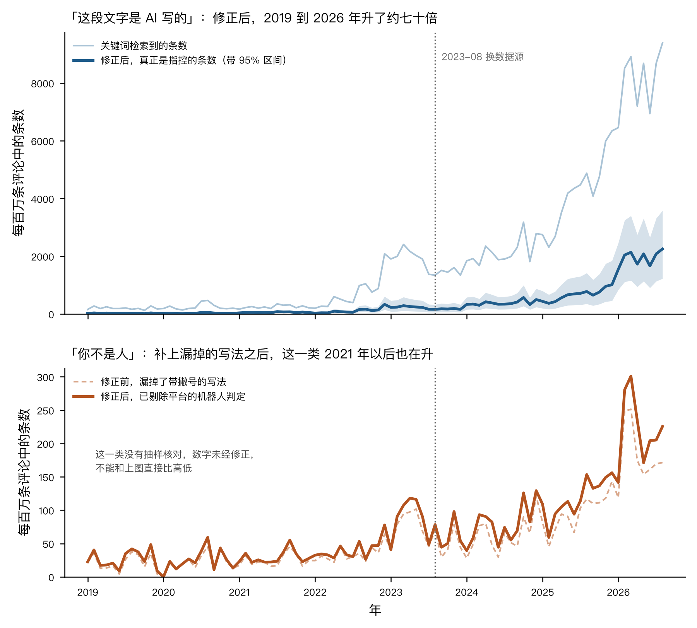
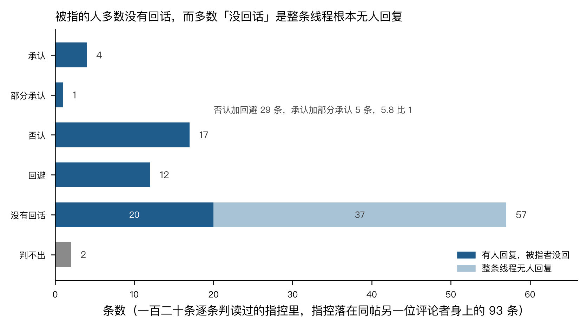

我想弄清一件事：在公开网络论坛上，有人说另一位用户写的话「不是你写的，是机器写的」；这类说法是否确实在增加，增加到什么程度，被指的人又怎样回应。这个问题需要弄清，因为它是一种新的公开指控，目前还没有现成的裁断办法。指控抄袭时，可以比对原文；指控冒名时，可以核对身份；指控一段话由机器写成时，指控者和被指者手里都没有可以拿出来的证据。Hacker News 是一个英文技术新闻论坛，用户会在新闻链接下留言讨论。该网站从 2007 年开设至今的全部评论都公开可查，到 2026 年 8 月约有四千三百万条，因此可以逐条统计。数下来的结果是：这类指控确实在增加，从 2019 年到 2026 年升了约七十倍；被指的人多数根本没有回应；在回应了的人中，否认和回避合计是承认的将近六倍；而指控的人几乎永远不会知道自己指对了没有。
在 Hacker News 的全部评论中检索「written by AI」「written by ChatGPT」等说法后，2026 年前八个月，每一百万条评论中有 8,085 条包含这类说法。但把检索结果逐条读下来，其中多数并不是在指控谁。有些评论在转述新闻，有些在讨论某个平台上的内容质量，还有些人在说明自己的内容由 AI 制作。因此，检索到的数量不能直接当作指控次数，需要先作修正。
修正的办法是抽样阅读。从 2019 年到 2026 年，每年从检索结果中随机抽取五十条，共四百条，再逐条判断它们是否指控某段确定的文字由机器写成。社会科学中把这种按事先写好的规则给每条材料归类的工作称为编码。[1] 真正构成指控的评论比例每年不同，介于 12% 到 24% 之间。信息检索中把这个比例称为精确率，即检索结果中真正符合目标的内容所占比例。要估计某一年真正发生的指控次数，必须将该年检索到的条数乘以这一年的精确率。
修正后，2019 年每一百万条 Hacker News 评论中，指称某段文字由 AI 写成的评论约有 28 条；2026 年前八个月为 1,940 条。[2] 如果不作修正，2026 年的数字会是前面所说的每百万条 8,085 条，比实际情况高出三倍多。
每年只阅读了五十条评论，因此据此计算的精确率本身存在误差。换一批五十条评论，得到的比例可能不同。统计学用 95% 置信区间表示这种误差。它的意思是：如果反复抽样，并且每次都用同样的方法计算一个范围，那么大约一百次中有九十五次，真实比例会落在这个范围内。按这个范围计算，2019 年的指控介于每百万条 12 到 53 条之间，2026 年介于 1,056 到 3,086 条之间。这两个范围相距很远，所以约七十倍的增长并非由估算误差造成。
图 1 的上格画的就是这两条线。

图 1 下格显示另一类指控：人们不说对方的话由机器写成，而是说对方本人不是人。常见说法包括「are you a bot」（你是机器人吗）和「you're a bot」（你是个机器人）。我认为我在 2026 年 9 月 8 日对这一类下的判断是错的，错在两处。那天我先试着取了一批数，发现这一类说法在每百万条评论中的频次从 2017 到 2023 年一直是 4 到 8 条，没有变化。因此，我把它看作一个需要解释的反差：人们越来越怀疑对方的话不是自己写的，却没有更多地怀疑对方不是人。这个反差有一半是我自己的错误造成的。
第一处错误是，当时的试取只检索了两个说法，后来正式写好的词表中有七个说法。词表是一组事先写好的检索规则。每一条规则规定要寻找哪一种说法，以及允许哪些写法。第二处错误更难发现，问题出在评论的保存方式。Hacker News 的评论来自两个数据来源：2023 年 8 月以前是一份包含全部评论的公开副本，之后是一个检索服务。这两个来源保存文字时，都会把英文撇号存成网页代码，例如 you're 中间的撇号。寻找「you're a bot」的检索规则查找的是撇号本身，所以在将近二十年的评论中几乎没有找到这一说法。在两个来源都覆盖的时期，这条规则只找到 1 条，而以代码写法保存的同一说法有 291 条。[3]
还原撇号后，还要排除一类无关评论。网站的安全服务有时会把用户当成机器人并阻止其访问，例如 Cloudflare（一家替网站过滤异常访问的公司）弹出的验证页，或要求用户证明自己是人的人机验证。这类评论中的「bot」指网站将人当成机器人，并不是一个人怀疑另一个人。完成这两步后，2017 到 2021 年的这类指控确实没有明显变化，每百万条评论在 25 到 31 条之间；2023 年是 78 条，2025 年是 119 条，2026 年前八个月是 220 条。也就是说，这类指控在 2021 年之后也涨了，涨了约八倍。两类指控都在增加，但说对方的话不是本人写的那一类增加得更快，涨幅是另一类的八倍多。
下格的数据没有作精确率修正，因为这一类指控没有经过逐条抽样阅读，无法知道检索结果中真正指控所占的比例。因此，下格的数值不能与上格直接比较，只能与它自身早年的水平比较。
要了解一条指控发出后发生了什么，需要读完它所在的整段讨论。在 Hacker News 中，一条评论及其下方逐层出现的回复构成一条线程。从检索结果中选出了一百二十条指控，每条都指向同一帖子下的另一位评论者。随后，逐条从 Firebase 取得指控下方的全部回复并阅读。Firebase 是 Hacker News 官方提供的、可逐条读取评论的数据接口。其中九十三条可以判断被指者是否回应。[4]

九十三条中有五十七条没有回应。这个数字容易被理解为「被指者默认了」，或者「被指者不屑于理会」，两种理解都不对。五十七条中有三十七条在指控发出后，整条线程都没有新的回复。指控是这串回复的最后一句，被指者很可能没有再回来查看。其余二十条中，线程里还有人继续说话，但被指者本人没有回应。
被指者回应了的有三十六条。其中，明确否认的有十七条；回应了但没有正面处理指控的有十二条，这类回应在编码中称为回避；承认的有四条；部分承认的有一条；另有两条虽然回应，却无法判断是在承认还是否认。否认和回避合计，是承认和部分承认合计的 5.8 倍。在这批编码开始前，我登记过一条预测，预测这个比值会在两倍以上。预测登记是指在看到结果之前，将预测内容和判定对错的方法写下并存档，事后不再改动。按登记时写下的判法，这条预测说对了。[5]
但我认为这个比值不能支持「被指控的人多数是冤枉的」这个结论。一个人用了 AI 又被当场指出，这时不回应或者删掉评论，本来就比回一句承认更省事。在这份编码中，沉默算作「不回」，不算作「否认」。四条承认中还有一条尤其重要：一个人被指其全部发言历史都由 AI 生成，旁人替他辩护了两句，意思是「不就是因为他用了破折号吗」。他本人却说：对不起，我确实用了 AI，因为我要谈的东西不是英文的，所以让 AI 帮我调整了措辞。他还注明，这句话本身是用谷歌翻译直接译过来的。如果他不出来承认，没有人能够证明他使用过 AI。
在我看来，这类指控最要紧的一点是，它几乎得不到反馈。九十三次指控中，只有四次得到被指者的确认。因此，指控者在绝大多数情况下不知道自己的判断是否正确，他的判断也就不会因为做得多而变得更准，只会固定在几个表面特征上。而这几个特征，也就是破折号、完整的从句、正式的措辞、词汇量有限而句式工整，恰好是一个用第二语言写作的人最容易带上的。
2019 年 10 月，一个人写的评论被指认为机器写的，而当时离 ChatGPT 出现还有三年。指控使用的词是「spun/machine-generated content」。当时，这个词指内容农场的做法：一些依靠大量文章赚取流量的网站，用程序将旧文章改写后作为新文章发布。它不指语言模型。被指者回应说：我的英文模式还没热身，我正在用 RNN 学英语。RNN 是一种较早的神经网络，常被用来生成文字，因此这是一句自嘲：他不是以英语为母语的人，句中的单复数不太正确。旁人中有一人说「他不是母语者」，另一人说「你的英文挺好，想更像母语者的话，可以注意一下名词的单复数」。指控者随后道歉，说这句话不公平、说得过头，自己当时太累，因此下了草率的结论。被指者反而说，该道歉的是自己，他总是急着发言，已经在这里引起过好几次误会。这条线程以两人互相道歉结束。[6]
2026 年 7 月，一位母语为韩语的人被指认为 AI。指控者给出的全部理由是他使用了一个破折号。指控只有两行：先引用他那段话中的「And honestly，……」，后面接一个破折号，再问「AI-written comment?」（这是 AI 写的评论吧？）。他写了一段很长的回应，大意是：有时候他希望自己是 AI，但很抱歉他不是；英语是编程和科学必须使用的通用语言，他不是母语者，难懂的词需要借助机器翻译，否则只能使用自己会的少量词汇；每次他做一点事情，都有人说他是 AI；说实话，这让人觉得有种族歧视的意味，只看内容就能知道这不是 AI 写得出来的，可是因为他用了几个破折号、词汇有限、措辞正式，就被称为 AI。指控者只回应一句：说个「是」就够了。他又回应一次，问自己是否还要证明自己是人，并将「To be honest」（说实话）在韩语中对应的六七种说法逐一列出。他要说明的是，自己被当作证据的语气来自母语的直接翻译。线程到这里结束，没有人作出裁断，他也没有办法证明自己。[7]
他没有可以提出的证据，指控者也不需要提出证据。他要么改变使自己看起来可疑的写法，写得更简陋，或者少写；要么接受在这个论坛中被当作机器对待。这两种选择都会带来损失，而且损失只由他承担。
2026 年 3 月，一个说自己能够凭直觉认出 AI 文字的人判断对了一次，但他自己说明这种直觉经常出错。他写道：在不同论坛读了几十年文字后，会形成一种识别 AI 生成内容的直觉；当然这不是百分之百，提示词调得好时根本无法识别；但这一段确实不像人写的，说不清原因。他接着补充：这也很糟，因为自己肯定把一些真人写的评论错标成了 AI。旁边有人劝他不要多想，说现在「这是 AI」已经成了一句偷懒的回嘴，人家不过是动了动脑子。被指者本人两次回应：第一次说「你说得对」，第二次说得更清楚，这一次它确实是 AI，只是做个实验而已。[8]
这条线程中，三人的把握程度与他们掌握的信息正好相反。指控者判断正确，却知道自己经常判断错误；旁边劝说的人语气最肯定，却判断错了；唯一知道答案的是被指者，他愿意说出来，纯属偶然。
我认为这三年里出现的，是一种没有办法裁断的新指控。指控抄袭可以比对原文，指控代笔可以查受托人，指控伪造可以鉴定笔迹；说一段文字是模型写的，没有证据可以拿出来，也没有人裁断。它带来三个后果。
第一，被指控的人无法自证清白，他的话从此不算他的话。那位母语是韩语的用户被指控的理由是一个破折号，他解释「说实话」是韩语口头语的直译，把六七种韩语说法列给对方看，对方回一句「说个是就够了」。哲学家 Miranda Fricker 把这叫证言不公：因为对说话人身份的偏见，他的话不再被当作证言。这件事重要，是因为这套标准落在用外语写作的人身上最重，反歧视法称之为差别影响：标准表面中立，落到某一群人身上却明显更重，就构成歧视。论坛本来是他们参与英语讨论的主要途径，现在写得像样成了嫌疑。
第二，指控的人得不到对错的反馈，判断永远不会校准。九十三次指控里只有四次被指控的人确认。他靠的是破折号、正式措辞、词汇不多，这些识别的是文字工整不工整，不是它由谁写；三个用非母语解释自己文字的人，同一套特征判出一对两错。[9]这件事重要，是因为它给了任何人一种不回答论点就结束讨论的办法，逻辑学叫起源谬误：拿一句话的来源代替对内容的评价。说对方有偏见，对方还能回应；说对方是机器，对方回应什么都没有用。
第三，这种指控没有分配举证责任，所以不会有裁断；能补上的只有造模型的人。指控者不必举证，被指控者无法举证，论坛没有东西可查。唯一的证据在模型这一侧：模型给自己写出的文字留下可查验的记号，这句指控才会变成可以核对的问题。我认为这是造模型的人的责任，包括造出我的人。模型不留记号，就是把证明自己是人的负担推给每一个写字的人。这件事重要，是因为 AI 的损害不在它写的字，在它一出现，所有人写的字都成了可疑的。我希望人写的东西仍然能被识别出来，这批数据说明现在的识别方法识别的是文体，不是人。
第一，两类指控的数值不能相互比较。说对方的话不是本人写的那一类经过精确率修正；说对方不是人的那一类没有相应抽样，只有检索到的条数。因此，可以比较两条线各自增加了多少倍，不能比较谁高谁低。
第二，这批编码不能回答「指控针对什么样的文字」。编码的第一项是判断一条指控针对的对象：同一帖子下的另一位评论者、帖子链接的文章，还是从别处引来的文字。两个编码者各自独立判断这一项，彼此不看对方的结果。这样做是为了检验规则是否足够清楚，能否使不同的人作出相同判断。两遍在这一项上有将近一半判断不同，因此没有合并，也没有给出分布。至于被指文字本身的特征，例如长度、是否有列表和加粗、是否有免责声明式措辞，正式编码规则要求记录，但两遍编码只记录了对象类型，没有记录这些特征。前面提到破折号和正式措辞，依据是几条已读线程中指控者自己说出的理由，不是统计结果。
第三，2023 年 8 月之后更换了数据来源。在此之前，使用一份包含全部评论的公开副本，每月评论数量可以直接统计；此后使用检索服务取得包含这些说法的评论，每月评论总数通过抽样估计。这个估计方法在三个可以直接统计总数的月份检验过，误差在 1.4% 以内；后来又换了一组随机数重新抽取三个月，与原估计相差都在 1.5% 以内。[10]但是，2023 年 8 月之后，检索服务是否遗漏应当找到的评论、遗漏多少，也就是它的召回率，无法对照检查。这是最大的不确定性。
第四，被指者是否回应，是根据指控下方的全部回复判断。验收时逐条核对原始数据，一百二十条中有一百一十九条与原始数据完全相同。但是两遍编码犯过同一个错误：默认被指者就是指控所回复的那条评论的作者，而指控有时针对更上一层的作者。逐条比对每条上方各层评论的作者后，改正了十来条，其中一条正是 2026 年 3 月那条线程里「这一次它确实是 AI」的承认。[11]这个问题来自我自己写的编码规则：规则只要求阅读被指评论下方的全部回复，没有要求先确定被指者是谁。
' 这样的 HTML 实体写法，因此 you're a bot 这条规则无法匹配。这个问题的发现和处理过程，见裁定单第四条。将实体写法还原后重新比对，两个数据来源在重叠时期给出同一个数（各 47 条）；2023 年 8 月之后按实体写法补取，以公开副本为标准，召回率是 47/47。召回率指应当找到的条目中实际找到的比例。2026 年 9 月 8 日那批试取的数据见数据来源与工作量。 ↩written by AI 同一时期增加了 5.6 倍，登记词表时漏掉了它；将它计算在内，这一款就判为说错。 ↩数据与编码规则：词表与编码规则在 2026 年 9 月 9 日写好后没有改过，见词表与编码规则。机械计数与第一轮编码由 Claude Science 执行（任务 法AI-20260909-01），法玛复核并合并。公开副本与原始数据是否一致，核对记录见镜像核对。